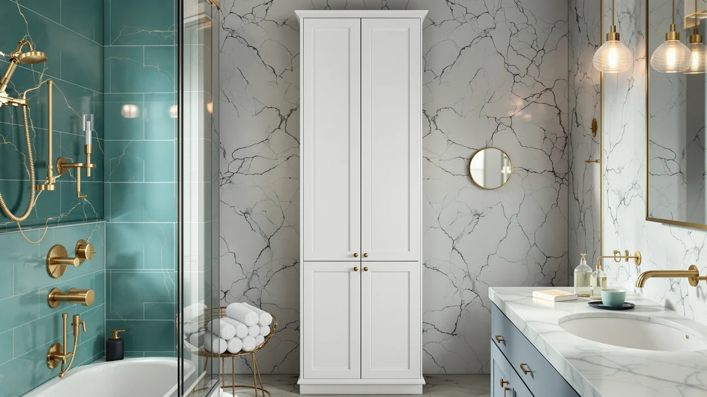

VASAGLE Tall Storage Cabinet Review (2026): Worth It?
Prices and picks verified as of October 2026. Independent, reader-supported reviews.


Quick Answer
The VASAGLE Tall Storage Cabinet is a metal and wood tower built to stand 66.9 inches tall on an 11.8 by 11.8 inch footprint, giving you vertical storage without eating into floor space you don't have. At $75.99, it costs roughly double what GeeBom's under sink organizers run, so it only makes sense if you need an enclosed cabinet rather than pull out bins tucked beneath the sink.
Our pick: VASAGLE Tall Storage Cabinet with, $75.99 Check Price on Amazon
Bottom line: our top pick is the VASAGLE Tall Storage Cabinet with Lights at $75.99.
Things to Know Before You Buy
- The VASAGLE Tall Storage Cabinet combines a metal frame with wood paneling, a pairing common among bathroom towers in this price bracket.
- Its 11.8 by 11.8 inch base is square rather than rectangular, which matters if you're fitting it into a corner instead of against a flat wall.
- At 66.9 inches tall, it clears most towel bars and medicine cabinets, giving you several feet of enclosed storage a shorter cabinet can't match.
- At $75.99, it costs more than twice as much as the GeeBom under sink organizers covered as alternatives below.
- If floor space is tighter than vertical clearance, the WOPITUES floating shelves further down skip the footprint question entirely by mounting to the wall.
This VASAGLE Tall Storage Cabinet review looks at whether an 11.8 by 11.8 inch, 66.9 inch tall metal and wood tower is worth $75.99 when narrower and cheaper alternatives exist for under sink storage. Bathrooms rarely have room to spare, so a cabinet this tall has to earn its square footage with real capacity and a build that won't wobble once loaded with towels and toiletries. We researched its construction, compared its price and dimensions against two GeeBom under sink organizers and a set of WOPITUES floating shelves, and read through what verified buyers say about living with it.
Tall bathroom cabinets like this one solve a specific problem: you need enclosed, out of sight storage that doesn't require crouching under a sink every time you need a towel. At $75.99, the VASAGLE Tall Storage Cabinet costs more than double the $35.99 GeeBom organizers it competes with here, a gap that only makes sense if you value a closed door over crawl space utility. Below, we break down what the metal and wood build gets right, where it falls short, and who should pick a cheaper alternative instead.
Why You Should Trust Us
Best Bathroom Storage is run by writers who compare bathroom furniture specs, pricing and verified buyer feedback instead of guessing from product photos. Ilane Tall, our home and bath expert, has covered dozens of storage cabinets, under sink organizers and shelving systems for this site, tracking how listed dimensions and materials hold up against what owners actually report. For this VASAGLE Tall Storage Cabinet review, we cross checked the manufacturer's listed measurements against the GeeBom and WOPITUES alternatives covered below, and we did not accept marketing copy at face value. We do not run a fake testing lab, and we do not claim to have installed this cabinet ourselves. Instead, we dig through verified reviews, compare specs line by line, and flag where a listing overstates what a product can deliver.
Our Research Experience
We did not put the VASAGLE Tall Storage Cabinet in a bathroom ourselves. Instead, we compared its listed specifications, metal and wood construction and $75.99 price against the GeeBom under sink organizers and WOPITUES floating shelves covered later in this review, and we read through the buyer feedback attached to this listing. Reviewers consistently note that the metal frame holds its shape once assembled, a pattern that shows up across similarly priced tall cabinets. According to verified owner comments, the main friction points involve assembly rather than the finished cabinet's stability once built. We weighed that feedback alongside the raw dimensions and price against the two cheaper alternatives to see where the VASAGLE Tall Storage Cabinet earns its higher price tag and where it doesn't.
Overview & Specs

VASAGLE Tall Storage Cabinet with
What we like
- 11.8 by 11.8 inch footprint fits a narrow corner or the gap beside a toilet
- Metal frame construction reported as sturdy by verified owners
- 66.9 inch height clears most towel bars and medicine cabinets
- Enclosed cabinet design keeps towels and toiletries out of sight, unlike open shelving
Flaws but not dealbreakers
- At $75.99, it costs more than double the GeeBom under sink organizers covered as alternatives
- Square 11.8 by 11.8 inch base still needs floor space that under sink or wall mounted options don't require
- Wood paneling is reported as less rigid than the metal frame, a common trade off at this price point
| Material | Metal / wood |
| Size | 11.8"D x 11.8"W x 66.9"H |
The VASAGLE Tall Storage Cabinet is built around a metal frame with wood paneling, a construction style common among bathroom towers priced under $100. At 11.8 inches wide and 11.8 inches deep, its square base is narrow enough to slide into a corner or the gap beside a toilet that a wider, rectangular cabinet would not clear. Combined with a height of 66.9 inches, that footprint gives it a tall, slim profile that prioritizes vertical storage over floor space, which matters in bathrooms where every square foot already has a job.
Verified buyers describe the metal frame as the sturdiest part of the build, holding its shape once assembled and loaded with towels or toiletries. At $75.99, the VASAGLE Tall Storage Cabinet costs more than double the $35.99 GeeBom organizers covered further down in this review, a gap that only makes sense if you specifically want an enclosed cabinet rather than pull out bins tucked under a sink. For a household that has vertical wall space to spare and wants storage that closes behind a door, that price difference buys a different kind of utility rather than a worse one.
What We Liked
The build quality stands out most in owner feedback. Reviewers consistently note that the metal frame resists wobbling even once shelves are loaded with heavier items like extra towels or cleaning supplies, a detail that matters more than shelf count when you're storing bulk goods. The square 11.8 by 11.8 inch footprint is the other clear strength: it fits spaces that would reject a standard rectangular cabinet, and the 66.9 inch height means you get several feet of enclosed storage without widening the base. For anyone comparing the VASAGLE Tall Storage Cabinet against open shelving, the closed door design also keeps towels and toiletries out of sight, which several owners mention as the reason they chose a cabinet over a shelf in the first place.
What Could Be Better
Price is the recurring friction point. At $75.99, the VASAGLE Tall Storage Cabinet costs more than double what either GeeBom under sink organizer runs, and reviewers who compared the two directly note that the extra cost buys enclosed storage rather than meaningfully more capacity. The wood paneling is the other soft spot: owners describe it as noticeably less rigid than the metal frame, a common trade off at this price point and one worth knowing about before loading the middle shelf with anything heavy.
Because the cabinet still needs 11.8 by 11.8 inches of floor space, it also isn't a fit for a bathroom with zero spare footprint. In that case, the WOPITUES floating shelves covered below skip the floor space question entirely by mounting straight to the wall, and the GeeBom organizers tuck into space you're already paying rent for under the sink.
Who Is It For?
The VASAGLE Tall Storage Cabinet fits a household with a narrow gap to fill and a preference for closed storage over open shelving. Its square 11.8 by 11.8 inch base makes it a strong pick for a corner, the space beside a toilet, or a hallway closet doubling as linen storage, and the 66.9 inch height suits anyone who wants to store towels and toiletries out of sight rather than on display. It is not the right choice if your bathroom has no floor space to spare or if $75.99 is more than you want to spend on a single piece of furniture.
In either case, the GeeBom under sink organizers or WOPITUES floating shelves covered below make better use of a tighter budget or a tighter floor plan. Renters in particular tend to prefer the floating shelves or pull out organizers, since neither requires committing floor space the way a freestanding cabinet does, and neither leaves a mark on the wall once you move out. A household that already owns a cabinet and is only short on shelf height, by contrast, is better served by the WOPITUES shelves than by replacing a working piece of furniture altogether.
Alternatives to Consider
If the VASAGLE Tall Storage Cabinet's $75.99 price or its 11.8 by 11.8 inch footprint doesn't match what your bathroom needs, these three alternatives cover the most common trade offs: two GeeBom pull out organizers that use the dead space under your sink instead of your floor, and a set of WOPITUES floating shelves that skip floor space entirely.

Editor's Pick
GeeBom Under Sink Organizer Pull
A pull out organizer that puts the space under your sink to work for less than half the price of the VASAGLE cabinet.
$35.99
Check Price on Amazon
Best Value
GeeBom Under Sink Organizer Pull
The same pull out organizer design as our Editor's Pick, listed separately at an identical $35.99 if the first listing is out of stock.
$35.99
Check Price on Amazon
Premium Choice
WOPITUES Floating Shelves for Wall
Wall mounted shelves that use zero floor space, a direct trade off against the VASAGLE cabinet's footprint.
$34.99
Check Price on AmazonIs the VASAGLE Tall Storage Cabinet a good fit for a small bathroom?
Its square 11.8 by 11.8 inch base is narrow enough for a corner or the gap beside a toilet, though it still needs that much floor space.
What is the VASAGLE Tall Storage Cabinet made of?
It is built from a metal frame with wood paneling, a combination reviewers describe as sturdy once assembled, though the wood panels are reported as less rigid than the frame itself.
Frequently Asked Questions
Is the VASAGLE Tall Storage Cabinet a good fit for a small bathroom?
Its square 11.8 by 11.8 inch base is narrow enough for a corner or the gap beside a toilet, though it still needs that much floor space. If your bathroom has none to spare, the WOPITUES floating shelves or GeeBom under sink organizers covered above use less or no floor space.
What is the VASAGLE Tall Storage Cabinet made of?
It is built from a metal frame with wood paneling, a combination reviewers describe as sturdy once assembled, though the wood panels are reported as less rigid than the frame itself.
Is the VASAGLE Tall Storage Cabinet worth it compared to an under sink organizer?
At $75.99, it costs more than double either $35.99 GeeBom organizer. The extra cost buys enclosed, out of sight storage rather than more capacity, so it comes down to whether you want a closed cabinet or pull out bins under your sink.
Final Verdict
This VASAGLE Tall Storage Cabinet review comes down to a straightforward trade off: a sturdy metal frame and enclosed, out of sight storage against a price that's more than double either GeeBom alternative. For a household with a narrow gap to fill and a preference for a closed door over open shelving, VASAGLE is the practical pick. If your bathroom has no floor space to spare or your budget tops out closer to $35, the GeeBom organizers or WOPITUES floating shelves covered above make better use of that constraint. Either way, VASAGLE is the brand worth starting with if an enclosed cabinet is what you're after.